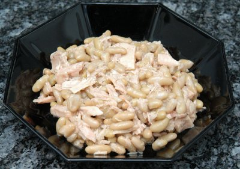

| Zutaten für 4 Personen: | |
| 1 grosse Büchse | Thunfisch |
| 3 Tl | Zitronensaft |
| Pfeffer aus der Mühle | |
| 1 Prise | Salz |
| 115 g | Bohnen |
| 1 Zehe | Knoblauch |
| Petersilie | |
Bohnen über Nacht einweichen oder im Dampfkochtopf weich kochen. Abgiessen und auskühlen lassen.
Öl vom Thunfisch in die Salatschüssel abgiessen. Zitronensaft zugeben und mit Salz, Pfeffer und gepresstem Knoblauch gut mischen.
Die Bohnen und den zerzupften Thunfisch zugeben. Gut mischen.
Unmittelbar vor dem servieren grosszügig gehackte Petersilie zugeben.
Eine leckere und einfache Vorspeise.
Wenn Zitronensaft zu scharf ist kann auch Weinessig verwendet werden.
Ein Kalender der Stadt Bath.
Simple and easy. Tastes good. RE, 5.3.2000, 29.1.2008
@LINKBACK_TAG@ @WAKELOCK@